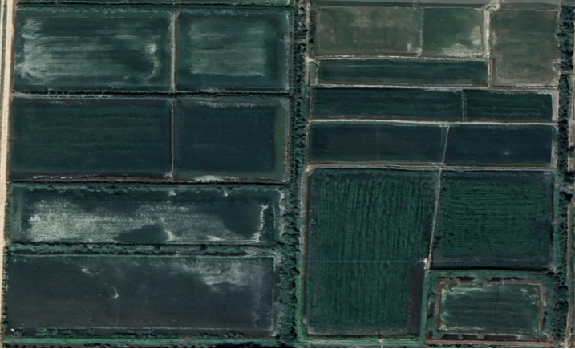
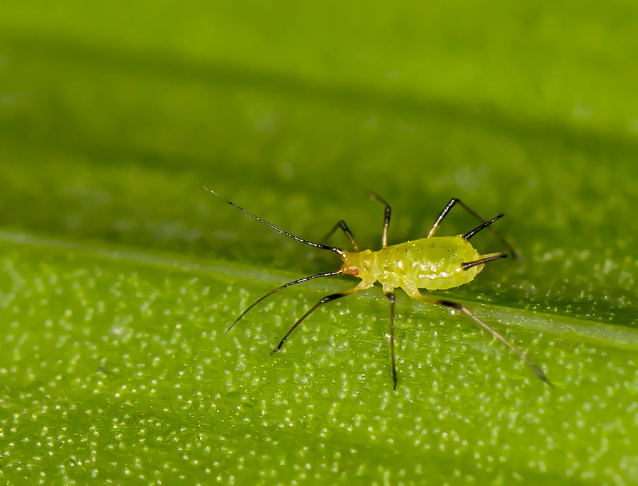

全方位构建 “认识 - 识别 - 预测 - 防控 - 追溯” 智能管理体系
提供全面的病虫害知识库，包括病害症状、防治方法、用药指导等专业科普内容。
基于深度学习图像识别技术，毫秒级匹配病虫害特征库，同步推送科学防治方案。
整合气象、土壤、历史病害数据，AI模型提前5-7天预警风险，辅助科学决策。
基于AI算法的智能防控策略，自动制定个性化防治方案，精准投放农药，降低环境污染。
包含病虫害档案、田块详情、设备管理等基础数据和健康分析等，助力精准管理。
提供全面的病虫害知识库，包括病害症状、防治方法、用药指导等专业科普内容。
基于深度学习图像识别技术，毫秒级匹配病虫害特征库，同步推送科学防治方案。
整合气象、土壤、历史病害数据，AI模型提前7-15天预警风险，辅助科学决策。
基于AI算法的智能防控策略，自动制定个性化防治方案，精准投放农药，降低环境污染。
包含病虫害档案、田块详情、设备管理等基础数据和健康分析等，助力精准管理。
用数据驱动决策，让农业生产更科学、更高效

记录过往病虫害案例及治理方案，为后续种植提供参考依据

蚜虫聚集在叶片背面吸食汁液，春季高发期，已得到控制
根部出现病斑，夏季高温高湿时发生，已得到控制
叶片黄化萎蔫，秋季高发期，已得到控制